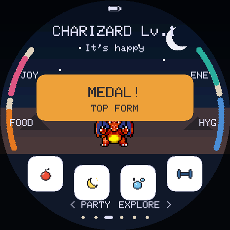
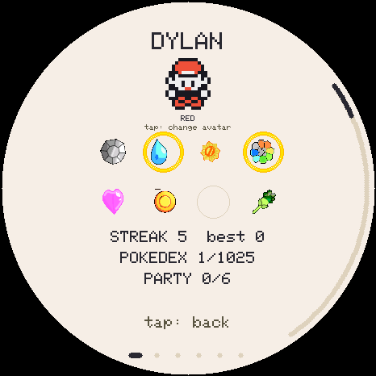

Firmware and SD manager
Build your TamaPoke.
Flash the board, install only the regions you need, and keep a restorable copy of your trainer, Pokemon, party, box, badges, and settings.


Board firmware
Choose a version and flash
Loading firmware catalogue...
The standard edition includes every game feature and loads region art from microSD.
Back up, then install reads the save off the board, checks it, downloads it and keeps a copy in this browser before handing over to the installer. Your browser may ask which board to use twice: once to read the save, once to flash. A brand-new board has nothing to back up and goes straight through.
Changelog
Current Pages build
Loading version notes...
Updating an existing board
Leave Erase device unchecked. A normal update preserves the save in flash and every sprite on the microSD. Erasing has no undo, so make a backup below first.
A brand-new board may only appear in download mode: hold BOOT, tap RESET, then release BOOT.
microSD library
Sync region packs
One connection manages packs and saves. Close the firmware install dialog before connecting here.
Save vault
Back up or restore your game
Download backup
Exports the complete save from internal flash: the live Pokemon, party, box, Pokedex, badges, inventory, and settings.
Restore backup
This page checks the length, format and checksum before sending anything, and the firmware validates it again before replacing your save, then restarts.
Recent backups
Kept in this browser
A convenience, not a backup. These live only in this browser on this computer, and are lost if you clear site data, use private browsing, or move to another machine. The downloaded .tpsave file is the real backup — keep it somewhere you trust.
Live output
Activity
Ready. Flash the firmware or connect a running board.